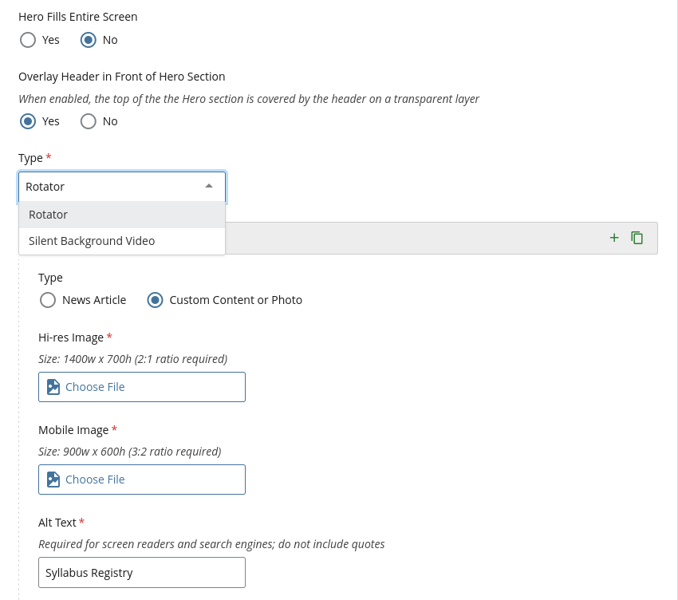

Page Tops
Heroes for the top of a home page or a landing page: copy beside screenshots or art, over a full-width photo or over a silent video.
Split Hero CMSScript
The top of a home page: copy on the left, art on the right. It becomes one column
below 820px. Use it at the top of a
service description's home page. Lead with a
tagline that says what the app does, then a button for the main action and a "Get
Started" call to action that jumps to the first section below, headed Get Started. The
tagline is the page's <h1>, and so is each section's heading after
it (see Stacking Sections). Under the buttons, an
optional note (cmu-cta-note) can
answer the one question the button raises, such as what to sign in with. Keep it to a
short line, and leave it out when the page answers it further down. The art can be:
- One screenshot, drawn in a browser frame.
-
Two or three screenshots, overlapping, with
cmu-hero-art--stack. They're cropped to the same shape from the top, and the last one is in front, so put the main one last. To let people see one up close, link it to its full-size image withdata-cmu-zoom(see Enlarge on Click). -
A photo with no frame, with
cmu-hero-art--plain: the place, the people or the thing the page is about.
The rule along the top and the tint behind the copy are CMU red. To set one site's
hero apart from another's, add an accent from the CMU tartan's threads:
cmu-hero--blue, cmu-hero--teal,
cmu-hero--green or cmu-hero--gold. Use one accent across a
site.
cmu-hero, cmu-hero--blue, cmu-hero--teal,
cmu-hero--green, cmu-hero--gold, cmu-hero-art,
cmu-hero-art--stack, cmu-hero-art--plain,
cmu-cta-note
CMU Syllabi, in One Place
Find a course's syllabus before you register.

Two or three screenshots, each linked to enlarge on click:


A photo:
<div class="cmu-hero-art cmu-hero-art--plain">
<img src="images/checkout-desk.jpg" alt="The equipment checkout desk, with camera kits on the shelves behind it.">
</div>Full-Width Photo Hero Template
A full-width photo at the top of a page, before the breadcrumbs. It's a
div.hero with the photo as its background: a 900 × 600 version in
style for phones, and a 1400 × 700 version in
data-img, which the template's script swaps in on wider screens. Give it
role="img" and an aria-label describing the photo. On a page
with a hero, the template drops the line under the header's tabs, since the photo sits
right below them.
Over the photo, either a line of text in a dark band (div.text, with an
<h1> and an optional <h2>), or a white box that
links somewhere (a.box, with left or right).
Options: tall fills the window and adds an arrow down to the page, a
p.caption puts a line of text in a white band near the bottom, and
small or large on the box sets its width.
mask lays a fine screen over a soft, low-resolution photo.
hero, text, box left, box right,
small, large, caption, tall,
mask
In Cascade
- In the page's content, set Include Hero Section to Yes.
- Set Type to Rotator, with one panel of Custom Content or Photo. Add the Hi-res Image (1400 × 700), the Mobile Image (900 × 600) and the Alt Text.
- Text Overlay puts words over the photo: Centered Text (a heading of up to 40 characters), Text Box (left or right, a third to two-thirds wide, with an optional link), Caption or None.
More panels make it rotate, and Silent Background Video plays a video instead of a photo.

Several heroes in a section.js-flickityCustom make a slideshow, with the
same carousel script. For a service description,
the kit's split hero with screenshots usually says more than a
photo.
Silent Video Hero Template
A photo hero with a silent video looping behind it: add tubular and a
YouTube video's id in data-vid, and the template plays the video and adds
a pause button. Keep the photo: it shows while the video loads, on phones and wherever
the video can't play. Pick a few seconds of motion that loops cleanly and works
without sound. Load YouTube's player and the template's video script after the
template's scripts; a university-provided CMS site adds them itself:
<script src="https://www.youtube.com/iframe_api"></script>
<script src="https://www.cmu.edu/common/standard-v6/js/tubular-reload.min.js"></script>hero tubular, data-vid
My heart is in the work. Classes start Jan. 12.
In Cascade
Set the hero's Type to Silent Background Video, with the video's
YouTube id and the same two photos. Hero Fills Entire Screen is
tall.